以下、実装前と実装後の比較である。
▼ガードしながら移動しようとすると、ガードモーションのまま滑ってしまう。

▼上半身はガードモーションを、下半身は歩行モーションを使用する。

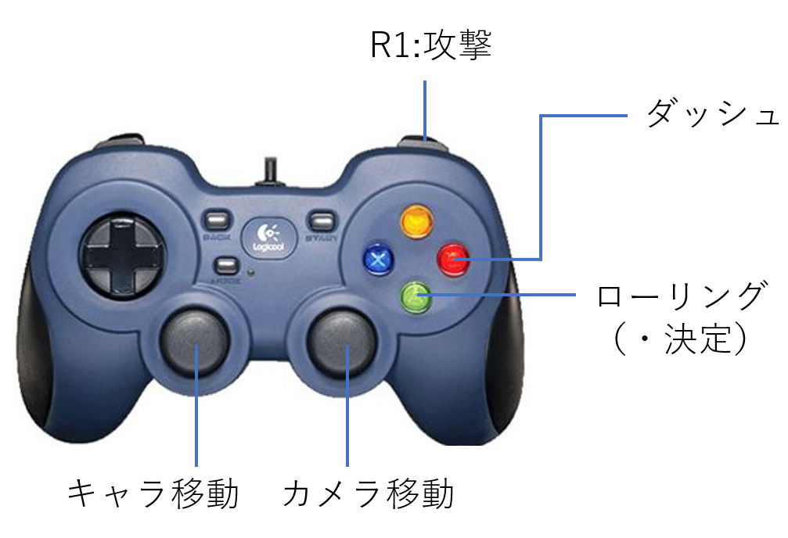
Aボタン・Jキー：ローリング、決定
Bボタン・Kキー：ダッシュ
R1ボタン・７キー：攻撃
L1ボタン・Bキー：ガード
右スティック・方向キー：カメラ移動
右スティック押し込み・９キー：ロックオン
左スティック・WASDキー：キャラ移動
今回のゲームは、グラフィック表現が魅せるポイントとなっている。よって、ライティングが非常に重要だった。Phongの反射モデルを使用した鏡面反射は物理的に正しいシェーダーではなく、各モデルのライティング調整をするには、専用のライトを作る必要があった。そこで起用したのが、ウォルト・ディズニー社が開発した Disney based PBR である。Disney based PBRは各パラメータを調整することで様々な表現をするので、ライトをモデルごとに分ける必要がない。フレネル反射を考慮した拡散反射、クックトランスモデルを利用した鏡面反射で、凝ったグラフィックを実現させた。以下の画像は、ライティングを一切行っていないゲーム画面と実際のゲーム画面の比較である。
▼ライティングなし（テクスチャカラー）
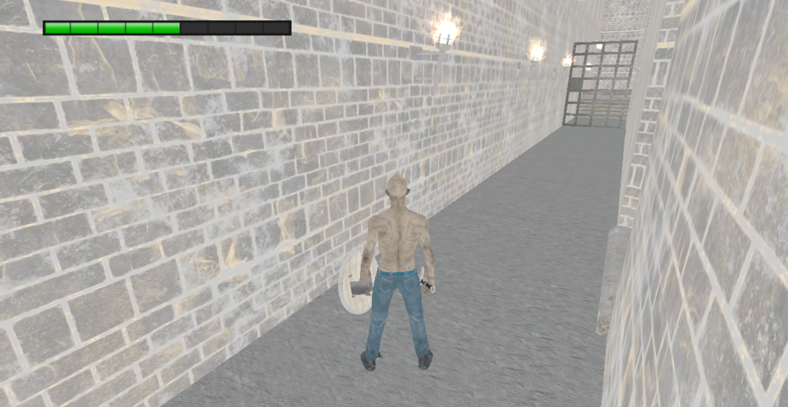
▼実際のゲーム画面
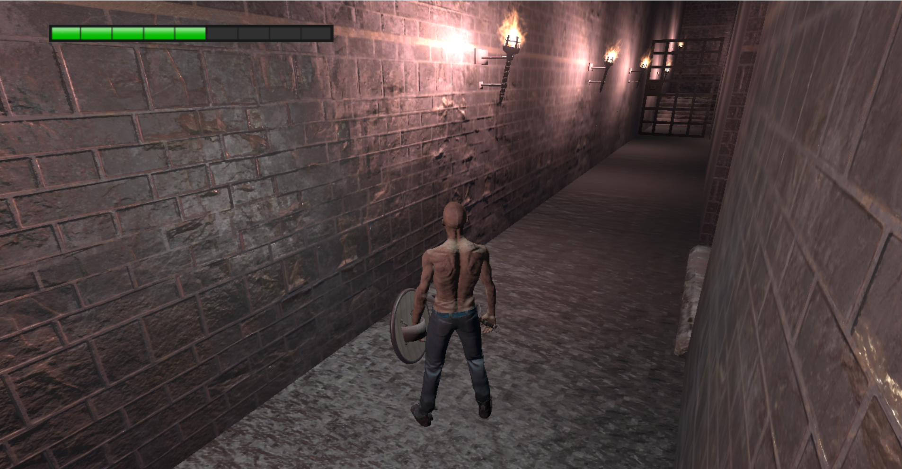
では、どうやって多くのポイントライトの処理を高速で行うのか。このTBRにおいてキモとなるのがライトカリングである。これは、スクリーンをタイル状に分割し、各タイルごとに影響を与える可能性のある光源のリストを作成するものである。もう少し分かりやすく言うと、各タイルでポイントライトとの当たり判定を行い、衝突しているポイントライトだけ計算処理をするということだ。
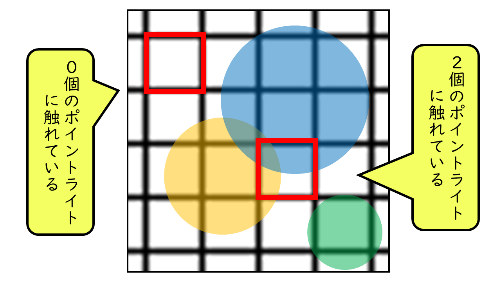
▲各タイルごとにポイントライトとの当たり判定をとる。
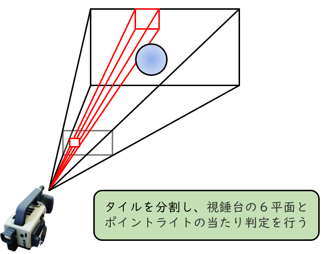
▲視錘台とポイントライトの当たり判定をとる
本来ならば、全てのタイルで全てのポイントライトの影響を計算していたのが、そのタイルに必要なポイントライトだけの計算で済むようになるわけだ。つまり、ポイントライトと全く接していないタイルでは計算をそもそもする必要がないため処理を行わない。
以下、ライトカリングを行うまでの手順である。
1.シーンの深度値テクスチャを作成する(本作品ではディファードレンダリングと融合したTBDRを実装しているため、G-Bufferを使用)
2.深度値テクスチャ、タイルごとのポイントライトの番号のリストを出力するUAV、カメラの情報、ライトの情報をディスクリプタヒープに登録[^1]
3.ライトカリングのコンピュートシェーダーをディスパッチ
------------------------ここからシェーダー側------------------------
4.共有メモリを初期化
5.全てのスレッドがここまでの処理が終わるまで同期[^2]
6.そのタイルでの最大深度・最小深度を求める
7.タイルの視錘台を構成する6つの平面を求める
8.タイルとポイントライトの衝突判定を行う
9.ライトのインデックスを出力バッファに出力
10.影響リストの終端に番兵を設定
11.影響リストを元に、そのタイルでのポイントライトの計算を行う
オブジェクトを配置していると、ライティングで無駄な処理が生まれることがある。それはカメラから見て物体が重なっているときである。
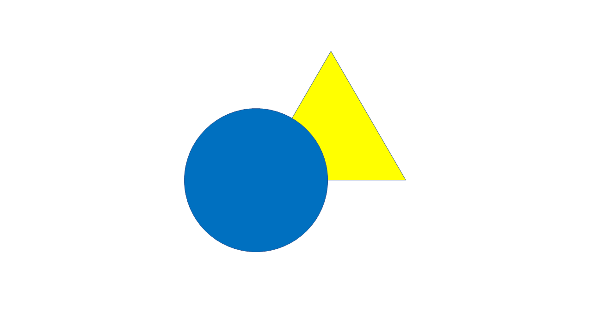
こういった場合、先に描画した三角形の一部が隠れてしまうため、その部分で行ったライティング処理が無駄になる。
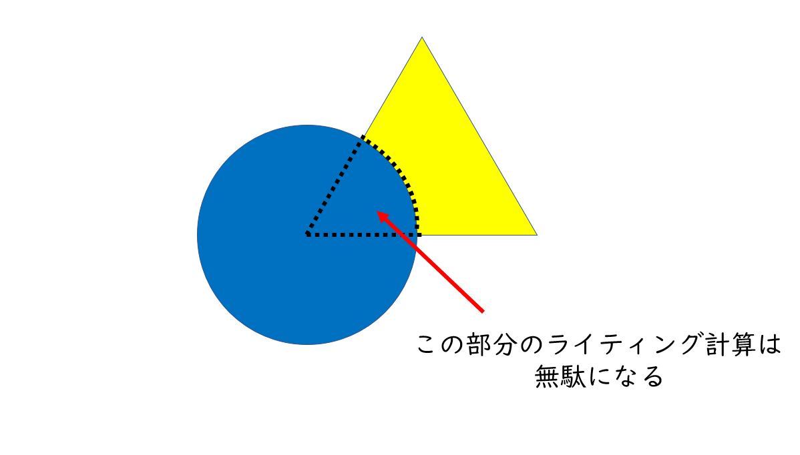
そのため本作品では、ライティング計算を後で行うディファードレンダリングを採用している。そうすることでオブジェクトの配置場所、量に関係なく、一定の回数でライティング計算を行うことができる。
しかし、ディファードレンダリングを行うにはいくつかの情報を先に書き出す必要がある。これはG-Bufferと呼ばれるもので、MRT（マルチレンダリングターゲット） で作られる複数のテクスチャであり、後にライティングを行うための情報になる。以下の画像は本作品のシーンの一部のG-Bufferである。
▼テクスチャカラー
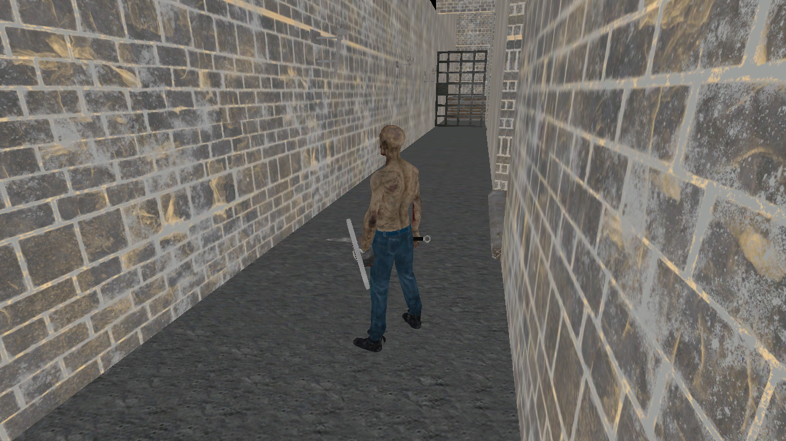
▼法線
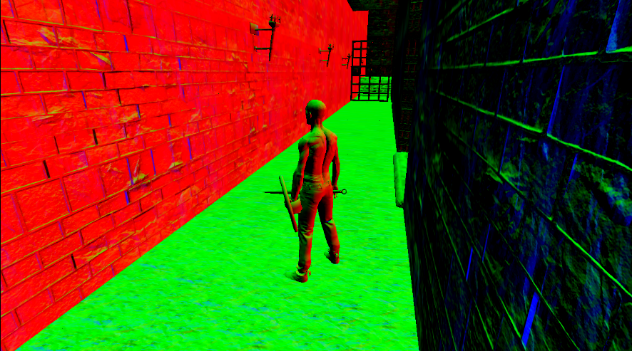
▼ワールド座標
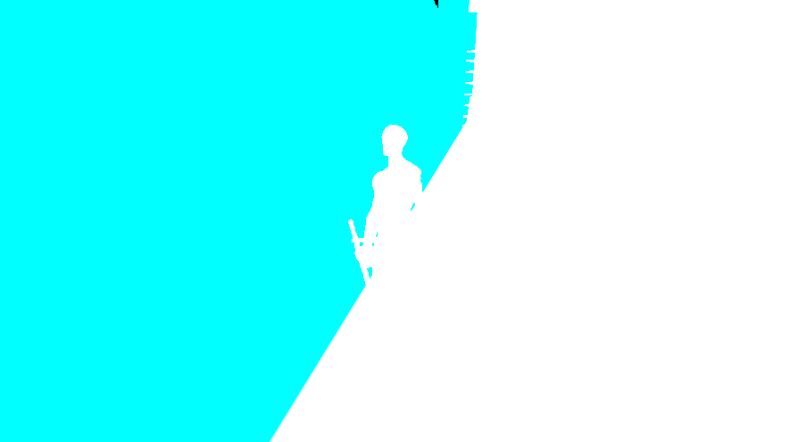
▼滑らかさと金属度
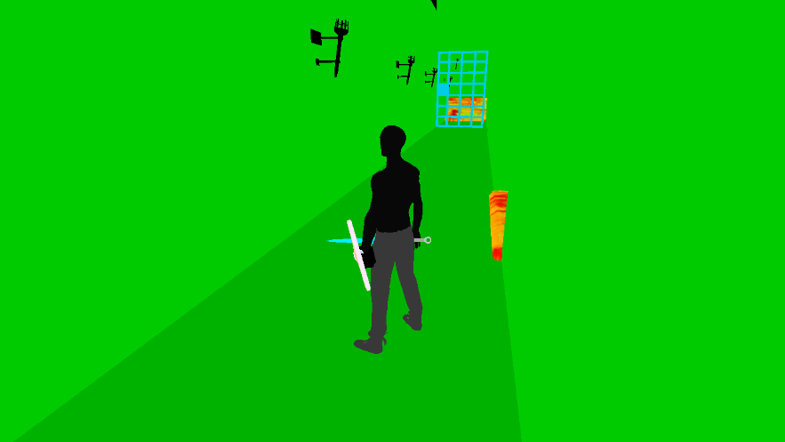
これらのG-Bufferを元にライティングされたものが以下の画像である。
▼ライティング後のシーン
しかし、ディファードレンダリングは半透明描画が出来ないという問題を抱えている。もし半透明描画をしようと思った場合、手前にある半透明オブジェクトと奥にあるオブジェクト、どちらもライティング計算をしなくてはいけない。具体的には法線が必要になる。しかし、ディファードレンダリングではG-Bufferを使って法線マップを作成するため、ピクセルには一つの値しか書き込むことができない。そのため、半透明オブジェクトを描画するには、他の手段を取る必要がある。そこで、本作品はディファードレンダリングとフォワードレンダリングを組み合わせたハイブリッドエンジンを実装している。これは、ディファードレンダリングを行った後で、フォワードレンダリングしたモデルを加算合成するというものだ。本作品に半透明オブジェクトは出てこないが、空を表現する際に必要になった。
空を表現する時にはキューブマップを使用したが、もし先にディファードレンダリングで描画すると、当然G-Bufferにその情報が書き込まれることになる。そうすると、空までライティングの影響を受けてしまう。そのため、本作品では、空に関してはフォワードレンダリングで表現している。
ディファードレンダリングの欠点として、MRTを活用しているため、メモリ使用量が増える問題がある。さらに、複数のG-Bufferに書き込む関係上、書き込み速度にも注意が必要だ。
本作品はソフトシャドウとしてVSM（分散シャドウマップ) を実装している。これは影生成で発生したジャギーを和らげるものだ。PCFは近辺４テクセルの平均を取って遮蔽率を計算し、線形補間で影の縁を和らげるものだが、これではジャギーを消すには足りなかった。
そこで実装したのがVSMである。
VSMは「シャドウマップをいくつかのブロックに分け、その分散を利用して影を和らげる」というものだ。まずは、シャドウマップをいくつかのブロックに分けたいので、シャドウマップにガウシアンブラーをかけてテクスチャを縮小させる。これにより、周囲のテクセルの値と混ざったテクスチャが出来上がり、この混ざったところが分散を求めるブロックになる。
▼ガウシアンブラーをかけたシャドウマップをいくつかのグループに分けた図
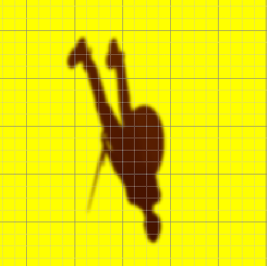
▼グループごとの深度値の分散を考える
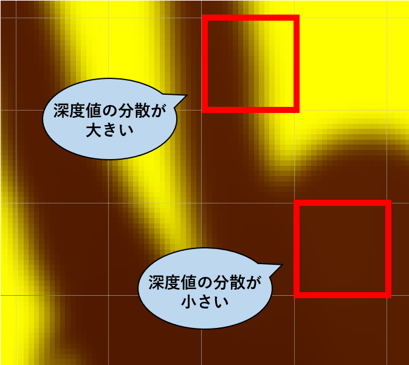
この分散を使って、光が届く確率を求め、影を落とすというのがVSMである。分散が小さい=影が薄くなる、分散が大きい時=ほぼ光が遮断されているので、影が濃くなる、というわけだ。
分散を求める式は以下である。
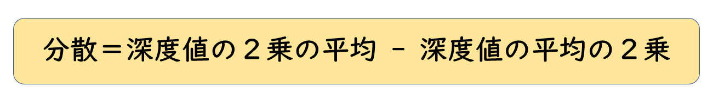
深度値はライトカメラの情報と合わせて得ることができる。
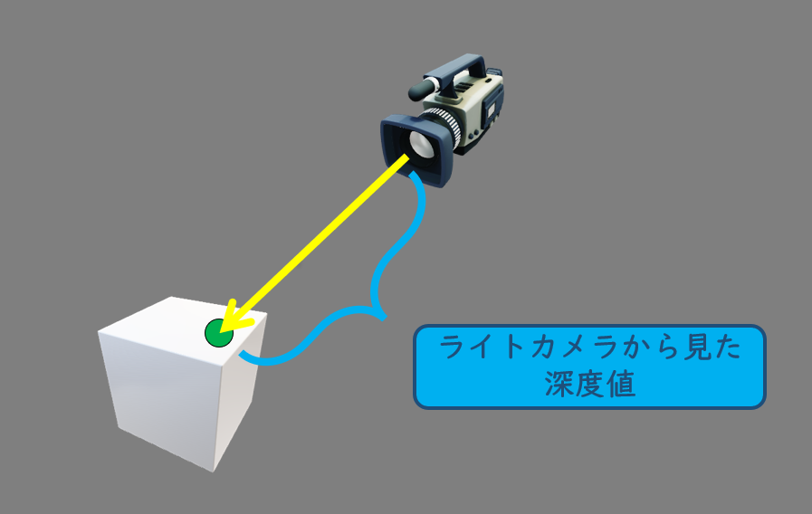
影を落とすときは、チェビシェフの不等式を使っている。このチェビシェフの不等式は分散とライトから見た深度値とシャドウマップの平均の深度値の差を用いて光が届く確率を求めるというものだ。
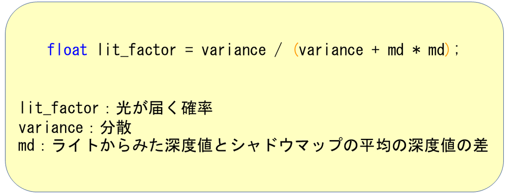
▲チェビシェフの不等式を使って光が届く確率を求める。
lit_factorとvarianceの関係は以下のようになる（mdは0.5とする）。
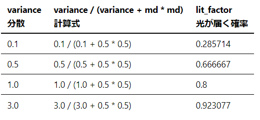
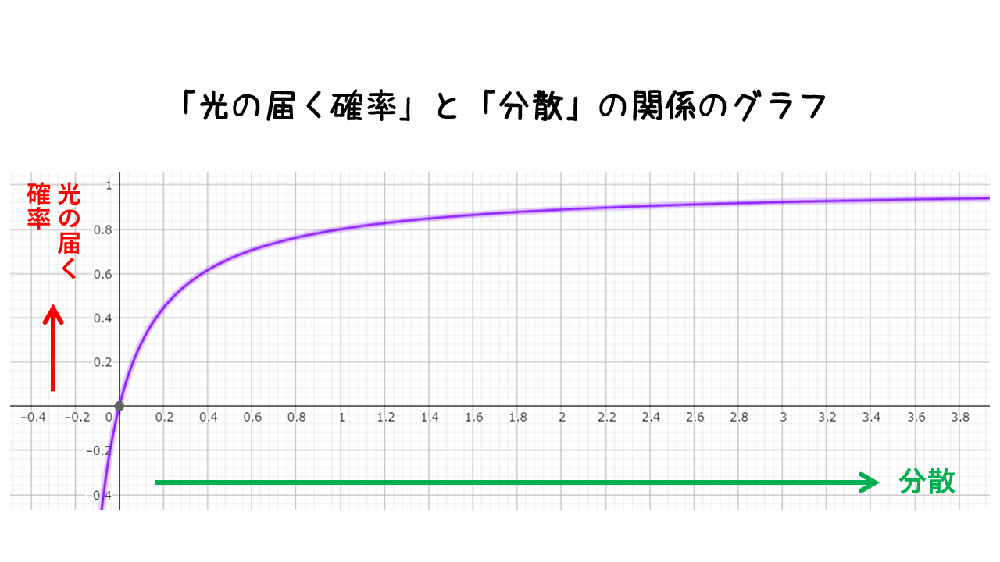
lit_factorとmdの関係は以下のようになる（varianceは0.5とする）。
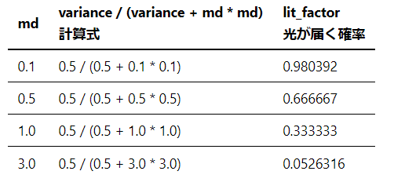
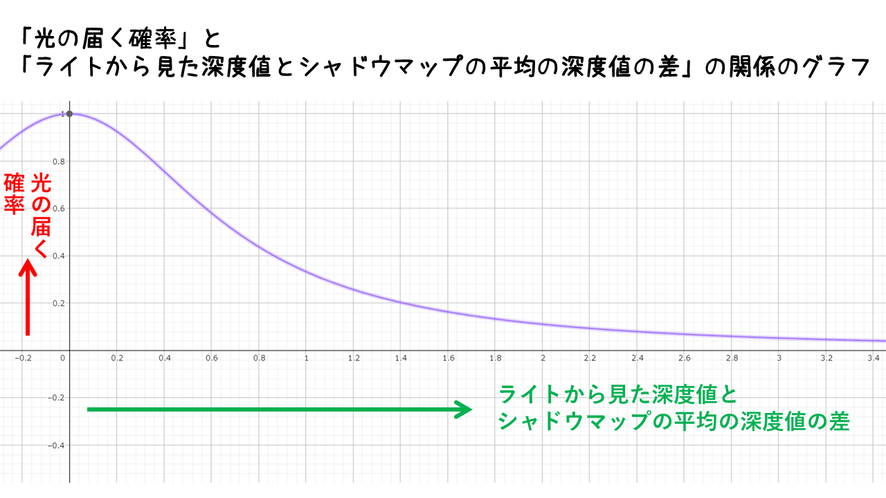
後は、求まった確率をライトの強さに乗算すればVSMは完了だ。
以下、実際にVSMを使ったシーンを一部拡大したものである。
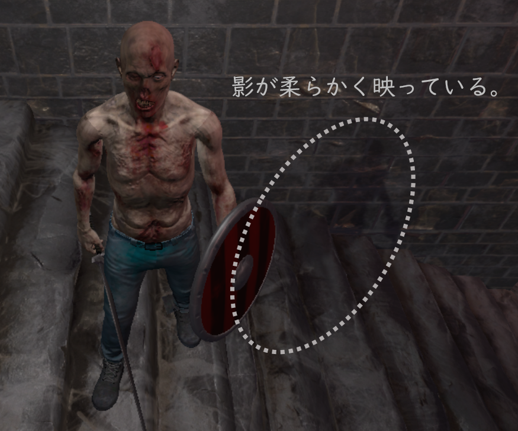
ジャギーの問題は影だけではない。モデルに関しても、ジャギーは発生する。
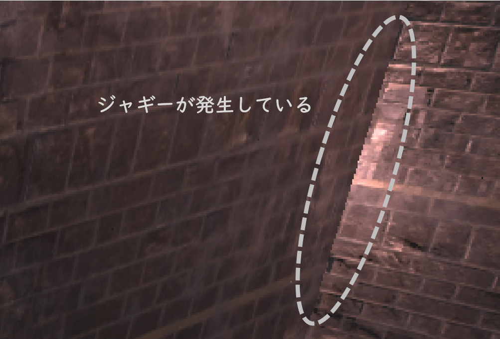
▲角の部分でジャギーが発生している。
ジャギーは"オブジェクトと背景"など、輝度差が大きくなりやすいところで発生しやすい。そこで、近辺４テクセルの輝度を調べて、ブレンドすることで、ジャギーを軽減しようというのがFXAAである。
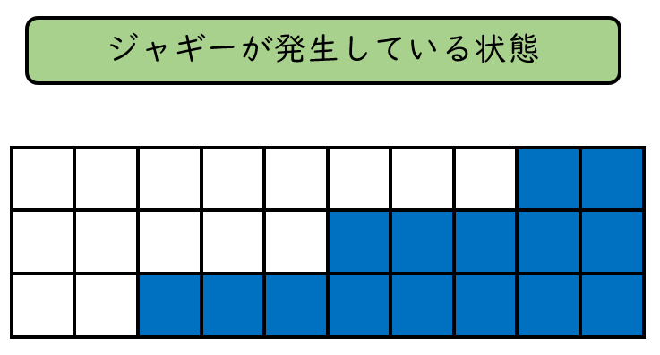
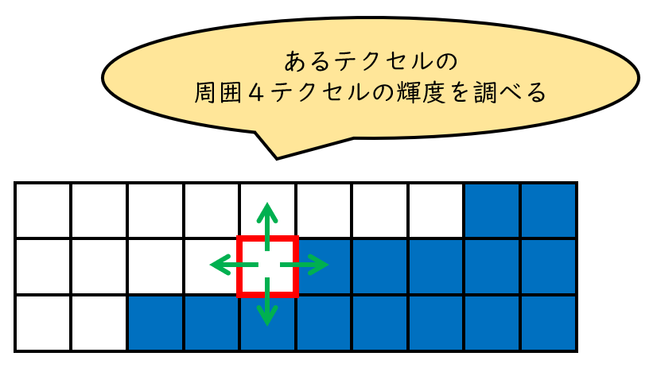
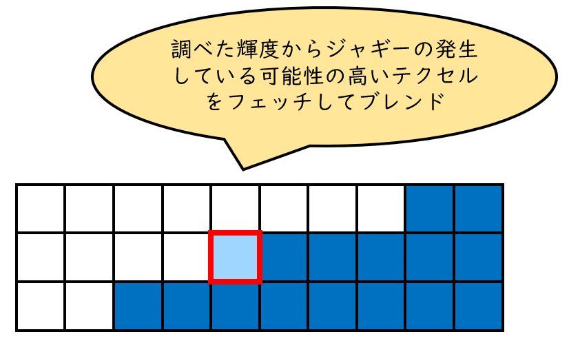
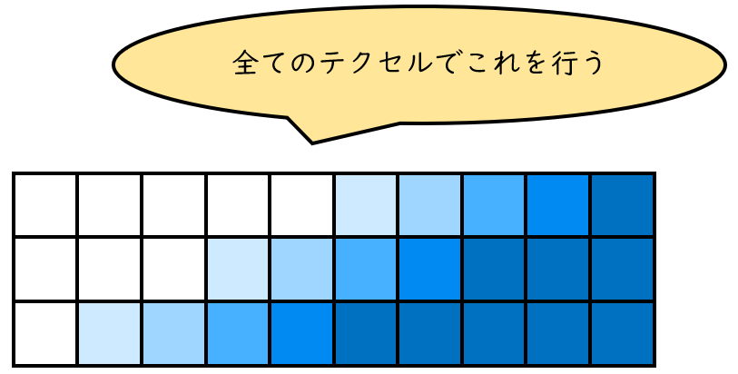
▼FXAA後。角の部分のジャギーが軽減されている。
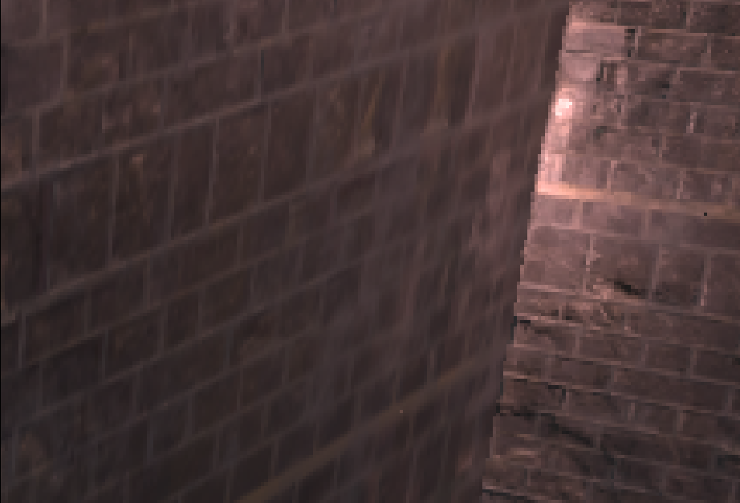
本作品では、敵の行動をPythonで管理している。C++側で関数の定義をし、Python側で、定義された関数を呼び出す仕組みだ。
手順は以下である。
1.まず、C++側で関数を定義する。
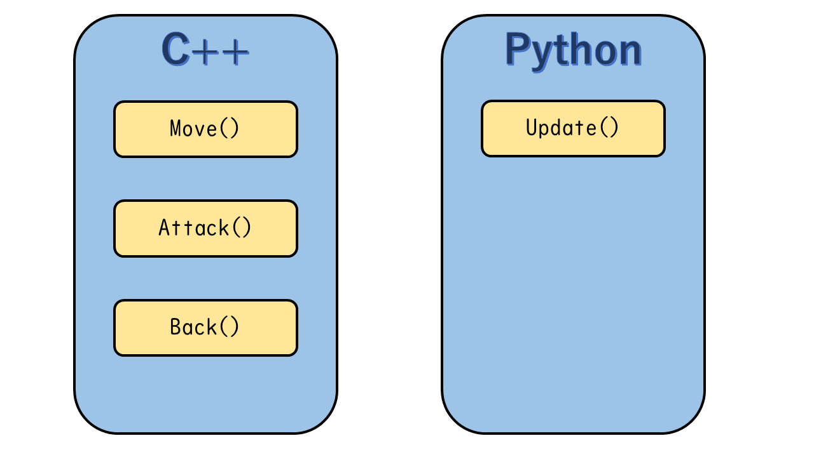
2.関数定義をPython側に登録する。
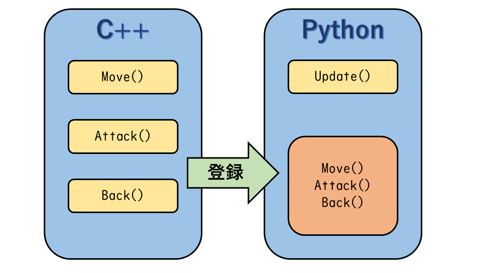
3.Python側は関数をインポートし、Update()内で指定した関数を呼び出す。
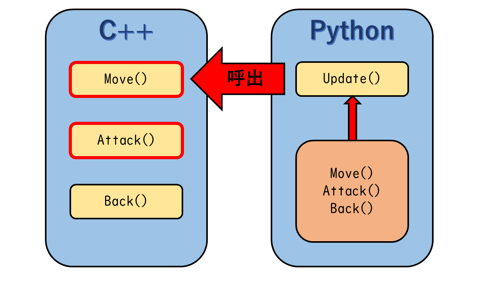
この手順は一見無駄なように感じられる。しかし、これにはメリットがある。それは、Pythonの方がコードを改造するのに安全だということだ。この作品の目的の一つとして、敵の行動を自分でカスタマイズできるようにするというものがある。難易度も、敵の攻撃スピードやパターンを変更することで調整でき、自分のスタイルにあったゲームに変えられるのだ。
しかし、プログラミングの経験がない方に、C++のコードを改造させるのは難しい。そこで、「どの関数がどのような働きをするのか」、そこまではこちらで記しておき、コードの書きやすいPythonを介する（かつ、Update()ただ一つの中で完結させる）ことにした。すると、改造に必要なことは、用意された関数を呼び出すことだけで済むのだ。もちろん、敵の行動を管理する中で、クールタイム等を変更したり、行動パターンをランダムに変えたりすることだってできる。[^3]
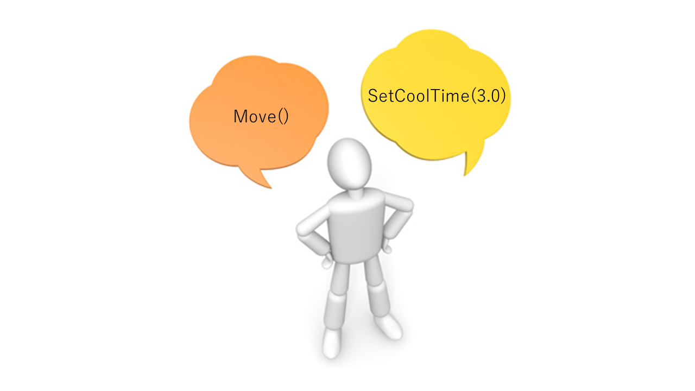
本作品のキャラクターは二つの状態を持つことがある。それは、ガードしながらの移動だ。当然、対応するアニメーションを用意しなければならない。
本来ならばアニメータの方にお願いするところだが、プログラマとしてどうにか実装できないかと考えたところ、新しくアニメーションのアセットを用意するのではなく、アニメーションブレンドに挑戦することに決めた。
以下、実装前と実装後の比較である。
▼ガードしながら移動しようとすると、ガードモーションのまま滑ってしまう。
▼上半身はガードモーションを、下半身は歩行モーションを使用する。
最初は敵の座標をカメラの注視点に設定していたため、カメラの範囲にプレイヤーと敵が綺麗に収まらない瞬間が見られた。
そのため、敵の座標ではなく、プレイヤーの頭上をカメラの注視点にすることによってこの問題を解決させた。
▼敵の座標を注視点に設定した場合。プレイヤーの下半身が見切れやすく、画面上部に空間ができやすい。

▼プレイヤーの頭上を注視点に設定した場合。画面にプレイヤーと敵がいい感じに画面に収まっている。

通常、カメラを切り替えると瞬間的に画面が切り替わってしまう。そこで今回はロックオンカメラと通常カメラの二つを用意するのではなく、同じカメラに対して様々な設定を行う二つのカメラクラス（ロックオンと通常）を用意することにした。そして、カメラを切り替える際に減衰率を元に視点と注視点の座標を補間することでスムーズな遷移を実装することができた。
▼滑らかにカメラが遷移している。

ロックオン対象がはっきり分かるように、ロックオンアイコンも実装した。
アイコンの画像はロックオン対象の敵と同じ座標に設定し、スクリーン空間座標系に変換することで、画面上でもロックオン対象の敵にアイコンが映るようになっている。
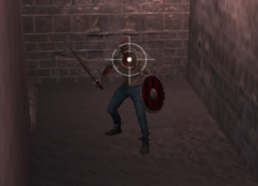
敵が複数体いる場合、右スティックの入力でロックオン対象を切り替えられるようにした。

本作品は、空気感を少しでも良くするために、映り込み表現としてIBL（イメージベースドライティング） を実装している。
IBLは、最も簡単に実装できる映り込み表現だと言えるだろう。
手順は以下のようになる。
1.移り込ませるテクスチャを用意する（本作品はキューブマップを使っている）
2.IBLで用いる輝度を設定する
------------------------ここからシェーダー側------------------------
3.視線（シーンカメラ）からの反射ベクトルを求める
4.そのピクセルに該当するオブジェクトの滑らかさから映り込みの度合を求める
5.反射ベクトルと、映り込みの度合いから、移り込ませるテクスチャをサンプリングし、ピクセルのテクスチャカラーとIBLで設定しているテクスチャと輝度をそれぞれ乗算する
6.そのピクセルのライトのカラーに加算する
このIBLを実装しようと思った理由は、床や壁に不気味な空が映ると雰囲気がでると思ったからである。ただ、床や壁は滑らかとは言えず、テクスチャカラーも暗かったため、綺麗な表現にはならなかった。
▼赤い月を移り込ませたかったが、床や壁のカラー、質から上手く映らなかった
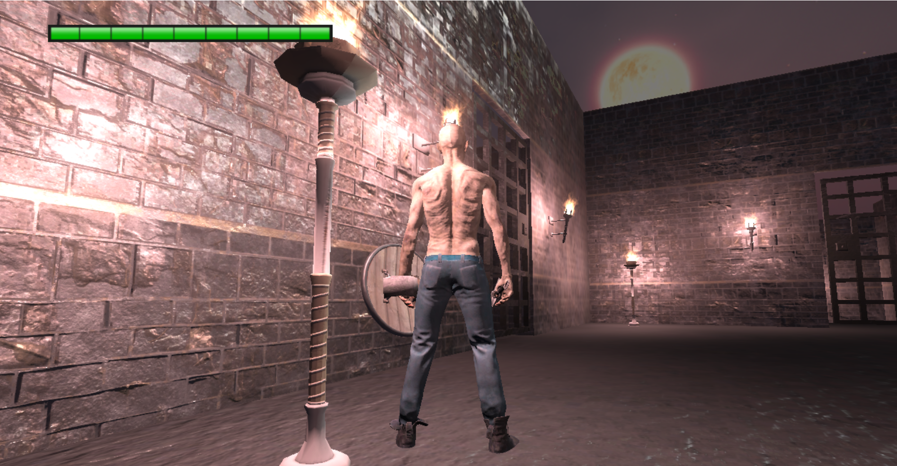
ボス戦は盛り上げる形にしたかった。BGMもそうだが、雰囲気づくりにもう少し踏み込みたかった。
ボスは通常の敵と違い、ジャンプ攻撃を仕掛けてくることがある。そこで、地面に着地した時にカメラを揺らす演出を入れた。

基本的にこのゲームはプレイヤーを中心にカメラが動く。なので、カメラの動き（画面の動き）は操作している人にとって大方予測できるのだ。カメラを揺らし、不規則に画面を動かすことで、臨場感を底上げした。
本作品の魅力は何といってもグラフィックである。ゲームの空気感に合うように、違和感がでないように、PBRを上手く使った。剣や盾は木材部分と金属部分で滑らかさや金属度を、床や壁は反射しすぎないように滑らかさを調整した。

[^1]: 深度値テクスチャは、シェーダー側では読み込むだけなのでシェーダーリソースビューで十分だが、UAVに関してはシェーダー側で情報を書き込む必要があるため、アンオーダーアクセスビューに指定しなくてはいけない
[^2]: 共有メモリの初期化を行う前に他のスレッドが最大深度・最小深度の更新を行うのを防ぐため
[^3]: 敵の動き（呼び出されるpythonファイル）はステートで管理されているため、ステートを変更するだけで行動を変えられる。